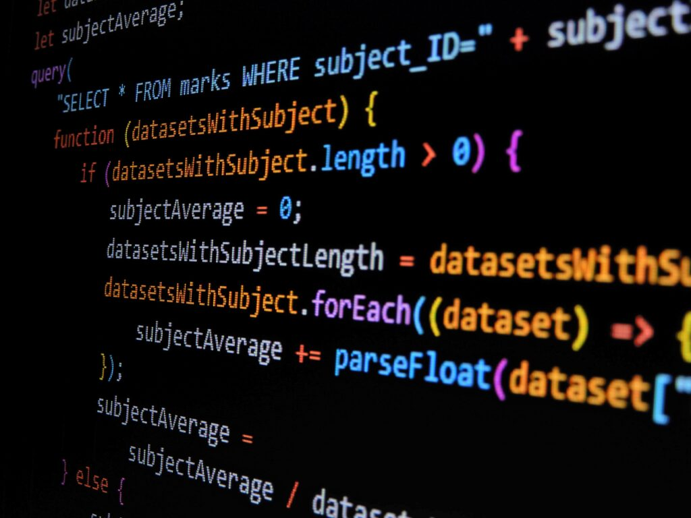

Conceptos basicos de Javascript
Variables
- Las variables son contenedores que almacenan datos. En JavaScript, se declaran con var, let o const.
- var tiene un alcance global o de función, let tiene un alcance de bloque y const se utiliza para declarar constantes.
Tipos de datos
- Primitivos: number (números), string (cadenas de texto), boolean (verdadero o falso), null (valor nulo), undefined (variable no definida), symbol (símbolos únicos) y bigint (números enteros grandes).
- Objeto: objetos (colecciones de propiedades).
Operadores
Los operadores permiten realizar operaciones en los datos.
Aritméticos: + (suma), - (resta), * (multiplicación), / (división), % (módulo).
De asignación: = (asignación), += (suma y asignación), -= (resta y asignación), etc.
De comparación:== (igualdad), === (igualdad estricta), != (desigualdad), !== (desigualdad estricta), > (mayor que), < (menor que), >= (mayor o igual que), <= (menor o igual que)
Lógicos:&& (AND), || (OR), ! (NOT).
Estructuras de control
Las estructuras de control permiten controlar el flujo de ejecución del código. Las más comunes son:
- Condicionales: if, else if, else (ejecutan un bloque de código si se cumple una condición).
- Bucles: for (repite un bloque de código un número determinado de veces), while (repite un bloque de código mientras se cumple una condición), do...while (repite un bloque de código al menos una vez mientras se cumple una condición).
- Switch: permite evaluar una expresión y ejecutar un bloque de código correspondiente a un caso.
Funciones
- Las funciones son bloques de código reutilizables que realizan una tarea específica. Se definen con la palabra clave function.
- Pueden recibir parámetros y devolver valores.
Objetos
- Los objetos son colecciones de propiedades, donde cada propiedad tiene un nombre y un valor.
- Se pueden crear objetos literales ({}) o utilizando constructores (new Object()).
Arrays
- Los arrays son listas ordenadas de elementos. Se pueden crear con corchetes ([]).
- Los elementos de un array pueden ser de cualquier tipo de dato.
Eventos
- Los eventos son acciones que ocurren en el navegador, como clics del ratón, pulsaciones de teclas o carga de la página.
- JavaScript puede escuchar eventos y ejecutar código en respuesta a ellos.
DOM (Document Object Model)
El DOM es una representación en forma de árbol del documento HTML. JavaScript puede interactuar con el DOM para modificar el contenido y la estructura de la página web.